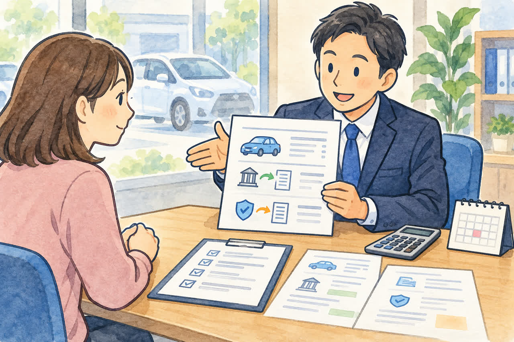
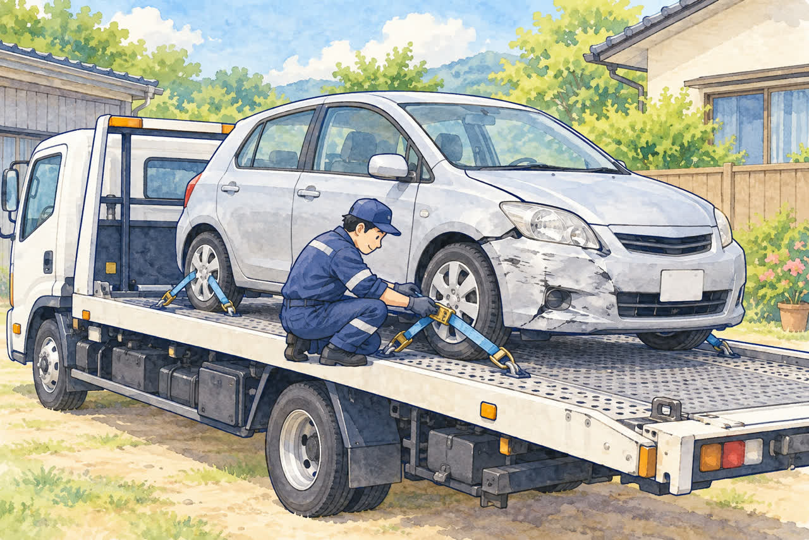
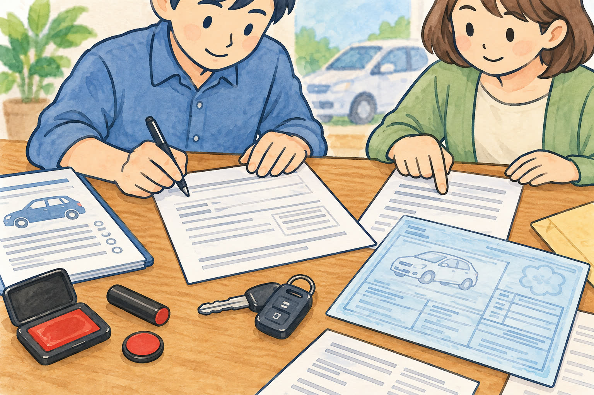

事故で動かなくなった車をお持ちの方へ
足立区で事故車を買い取ってもらうには？
動かない車でも大丈夫
公開
こんにちは、足立区江北で自動車解体・廃車買取をしている「大崎商店 環七店」です。
「事故で、車が動かなくなってしまった」
「修理代が高くて、直すより手放したほうがいいかもしれない」
「事故車でも、買い取ってもらえるのだろうか」
事故にあった車は、どこに相談すればいいのか、迷いますよね。
結論からお伝えすると、大崎商店は、事故で動かなくなった車も引き取っています。 事故車といっても壊れ方はさまざまで、自走できるか、車検が残っているかによって、買取価格も変わります。車種や状態によっては、引き取り当日の現金でのお支払いもできます。
この記事では、事故車の買取や引き取りの流れ、費用、準備しておくものを、やさしくご紹介します。

事故を起こしたあとの対応（警察や保険会社への連絡、レッカーの手配、保険の使い方）は、別の記事「事故を起こして車が動かないときの対応」でご紹介しています。 事故のあとすぐの方は、先にそちらをご覧ください。車の処分は、それらが落ち着いてからで大丈夫です。
事故車の買取は、壊れ方によって大きく変わります
「壊れた車は、お金にならないのでは？」と思われるかもしれません。でも、ひと口に事故車といっても、壊れ方の幅はとても広いものです。軽くぶつけただけの車もあれば、大きく壊れて動かない車もあります。
壊れ方の程度は、お電話ではなかなか判断できません。そこで大崎商店では、自走できるか、できないかを大きな目安にしています。
自走できて、壊れ方が軽い場合
自分で走れて、壊れ方が軽い場合は、修理して、もう一度車として販売できることがあります。この場合は、車体そのものに買取価格がつくので、事故車でも高価買取になることがあります。
自走できない場合
自走できない車でも、修理して再利用できる場合があります。損傷の程度や修理費などを確認し、再利用できるか、解体して廃車にするかを判断します。
重量税の還付金・自賠責保険の返戻金を含めた買取について

解体して廃車にする車は、条件を満たすと、自動車重量税の還付や自賠責保険の解約による返戻金を受け取れる場合があります。大崎商店では、これらの見込額を買取価格に含め、手続きを当店にお任せいただく方法をご案内しています。
この方法では、車を当店へ譲渡していただき、還付・解約などの必要な手続きを当店が行います。買取価格に含めた重量税の還付金・自賠責保険の返戻金は、当店が受け取る扱いになります。お客様に同じ金額が別途支払われるわけではありません。 お支払い前に、含まれる金額と手続きの内容をご説明します。
車の譲渡には、普通車の場合は譲渡証明書などが必要です。また、還付金の申請・受け取りを委任する書類や、自賠責保険の変更・解約に必要な書類は、車の譲渡とは別に確認します。車の種類や契約状況に合わせて、当店でご案内します。
買取価格に含めず、ご自身で必要な手続きを行って受け取る方法も選べます。 ご自身での書類準備や申請が必要になるため、当店では手続きと受け取りをお任せいただくケースが多くなっています。ご希望は、買取のご相談時にお知らせください。
残り期間と手続きの時期で、金額が変わります
- 自賠責保険：解約日から満期日まで、1か月以上の期間が残っている場合に返戻金の対象になります。
- 自動車重量税：適正に解体し、永久抹消登録や解体届出などと同時に還付申請を行い、所定の基準日から算定した車検の残存期間が1か月以上ある場合に還付対象になります。
金額は日割りではなく、残りの月数などに応じて計算されます。手続きの時期が月数の区切りをまたぐと、見込額が減り、これを含めた買取価格も下がる場合があります。 例えば、残り月数が1か月減る区切りを過ぎると、その分が査定に影響します。
車を引き取った日が、そのまま還付・返戻金の計算基準日になるわけではありません。書類の準備や解体・申請に日数がかかるため、期限が近い場合は早めにご相談ください。還付・返戻金の対象にならなくても、車自体の価値によって買取価格がつく場合があります。
買取価格がつかない場合は、無料で引き取ります
買取価格がつかない車も、環七店から車で片道約30分圏内なら、レッカー代・出張費は無料です。廃車手続きの代行・解体の費用もかかりません。範囲外の引き取りは、所在地と車の状態を確認して、対応の可否や費用をご案内します。
事故車の状態は、電話だけで正確に見分けるのは難しいため、まずは自走できるか、車検がいつまで残っているかを教えてください。そのうえで、買取になるか、無料引き取りになるかをご案内します。
引き取りの方法

事故で動かなくなった車は、積載車（車を荷台にのせて運ぶトラック）で引き取りに伺います。お客様が車を動かす必要はありません。
自走できない車は、レッカーで入谷店へ持ち込むのがスムーズです
事故車や動かない車は、ふだんから現地まで引き取りに伺っています。ただ、事故現場は、車を早く動かす必要があることがほとんどです。修理・販売・解体の作業や、ほかの引き取りの予定が重なり、お店の都合で、すぐに伺えないこともあります。 いつまでに車を動かしたいかを、お電話でお知らせください。お急ぎの場合は、レッカーで入谷店へ運んでいただければ、すぐに受け入れられます。自走できない車は、JAFなどのレッカーサービスで、大崎商店の入谷店まで運んでいただくと、お互いにスムーズです。
任意保険に入っている場合は、レッカーサービスが無料でついていることがほとんどです。保険会社への連絡の仕方や、搬送先の伝え方は、「事故を起こして車が動かないときの対応」の記事をご覧ください。お電話の受付は営業時間内（月〜土 9:30〜17:30）のみです。営業時間内にお話をして、引き取りまで話が進めば、営業時間外でも引き取りには伺います。
入谷店：東京都足立区入谷7丁目5−11（TEL：03-3899-2837）
ディーラーや販売店に運んだあとでも、引き取りに伺います
購入したディーラーや販売店に、事故車を運んで、修理の見積もりを出してもらうこともあります。見積もりを見て、修理をやめて廃車にする場合は、後日でも、大崎商店が搬入先まで引き取りに伺います。 動かない車の引き取りと同じ扱いで、買取になるか無料引き取りになるかなどは、上の説明と同じです。
無料で伺える範囲
- 買取価格がつく車（修理して販売できる車、車検が残っていて還付金が見込める車など）：片道約30分圏外でも、所在地と車の状態によっては無料で引き取りに伺えます。対応の可否と費用は、事前にご案内します
- 買取価格がつかない車：環七店から車で片道約30分圏内は、レッカー代・出張費が無料です
くわしくは「出張引き取りの対応エリア｜無料で伺える範囲は？」の記事をご覧ください。
引き取りが難しい場合もあります
積載車が車の近くまで入れないと、荷台にのせることができません。積載車が入れないような細い道の奥に車がある場合は、引き取りが難しくなります。 道の広さを、お電話のときに教えてください。
また、タイヤが回らない、ハンドルが動かない、車体が大きく変形しているなどの場合は、追加の道具や別の作業方法が必要になることがあります。事前に状態をお知らせください。
お電話のときに、教えていただきたいこと
事故車の引き取りをスムーズに進めるために、次のことを教えてください。わかる範囲で大丈夫です。
- 車種・年式：車検証に書いてあります
- 車が置いてある場所：事故現場、修理工場、自宅の駐車場など
- 自分で走れるかどうか：走れない場合は、その理由
- 車検と自賠責保険がいつまで残っているか：車検は、車検証の「有効期間の満了する日」を見てください。電子車検証は、券面に記載がないので、「車検証閲覧アプリ」や「自動車検査証記録事項」で確認できます。自賠責保険は、自賠責保険証明書で確認できます
- 事故の状態：前や後ろが大きくへこんでいる、タイヤが曲がっているなど、見たままで大丈夫です。原因の診断は不要です
- 周りのスペース：前の道の広さ、駐車場の入口の高さ制限など
特に大切なのは、自走できるかどうかです。自走できない場合は、その理由がわかると、伺うときに必要な道具などを準備していけるので、当日の引き取りがスムーズになります。
廃車に必要な書類

普通車の場合
- □ 車検証の原本
- □ ナンバープレート（前・後ろの2枚）
- □ 所有者の印鑑登録証明書（発行から3か月以内）
- □ 所有者の実印
委任状や譲渡証明書などは、当店で用意します。重量税の還付金・自賠責保険の返戻金を含めた買取の場合は、手続きや受け取りに必要な書類もご案内します。書類がそろっている場合は引き取り時に記入・押印し、不足している場合は後日ご提出いただきます。
軽自動車の場合
- □ 車検証の原本
- □ ナンバープレート（前・後ろの2枚）
軽自動車では、印鑑登録証明書や実印は不要です。
事故現場からお電話をいただく場合、書類は手元にないのがふつうです。
事故にあったとき、実印や印鑑証明書を持ち歩いている方は、ほとんどいません。そのため、事故当日に引き取りや持ち込みをする場合は、書類は後日お願いすることになります。 当日にそろえていただく必要はありません。
- 普通車：実印や印鑑証明書が必要なため、後日、必要書類を提出していただきます。
- 軽自動車：車検証とナンバープレートだけで対応できます。処分すると決まったら、処分までの流れはとても簡単です
こんなときは、先にご相談ください
- 事故で車検証をなくしてしまった（「車検証をなくしたけど廃車できる？」の記事をご覧ください）
- ナンバープレートが外れてしまった、見当たらない
- 所有者が、ディーラーやローン会社になっている
状況によって、追加の書類が必要になることがあります。書類を取りに行く前に、お電話でご相談ください。基本の書類は「廃車に必要な書類チェックリスト（普通車）」「軽自動車の廃車に必要な書類・準備チェックリスト」でも詳しくご紹介しています。
ご相談から引き取りまでの流れ
- お電話でご相談
車種、置いてある場所、自走できるか（できない場合はその理由）、事故の状態をお伺いします。 - 引き取りの可否と日程のご案内
買取できるか、無料で伺えるか、いつ伺えるかをご案内します。 - 積載車で引き取り
書類がそろっている場合は、このときに記入・押印をお願いします。不足している場合は、後日ご提出いただきます。 - 廃車の手続き
解体や抹消登録などの手続きは、当店が代行します。
車種や状態によっては、引き取り当日その場で現金買取もできます。当日の流れは「廃車のご依頼から現金お支払いまでの流れ」の記事でも詳しくご紹介しています。
よくある質問
Q. 事故で、前がぐしゃぐしゃです。それでも引き取れますか？
A. はい、積載車で伺います。お電話で、車の状態と置いてある場所を教えてください。
Q. 事故車でも買取価格はつきますか？
A. 車の状態や再利用の可否によって変わります。解体する車では、条件を満たす重量税の還付金・自賠責保険の返戻金の見込額を買取価格に含め、手続きを当店に任せる方法もあります。この場合、含めた還付金・返戻金は当店が受け取ります。ご自身で手続きする方法も選べます。買取価格がつかない車は、環七店から片道約30分圏内なら引き取り無料です。圏外は事前にご相談ください。
Q. 買取になるか、無料引き取りになるかは、どう決まりますか？
A. 自走できるか、壊れ方、車検や自賠責保険の残り期間などを伺って、ご案内します。まずはお電話で、車の状態をお知らせください。
Q. 保険を使って修理するか、廃車にするか迷っています。
A. 先に保険会社に相談してください。くわしくは「事故を起こして車が動かないときの対応」をご覧ください。廃車にすると決まってから、大崎商店へご連絡いただければ大丈夫です。
Q. 事故現場まで、引き取りに来てもらえますか？
A. はい、ふだんから現地まで引き取りに伺っています。ただ、事故現場は車を早く動かす必要があり、修理・販売・解体の作業やほかの引き取りの予定が重なると、すぐに伺えないこともあります。いつまでに車を動かしたいかを、お電話でお知らせください。お急ぎの場合は、JAFや保険会社のレッカーで入谷店へ運んでいただければ、すぐに受け入れられます。
Q. ディーラーで修理の見積もりを出してもらい、修理をやめた場合は？
A. 後日でも、大崎商店が搬入先まで引き取りに伺います。決まりましたら、お電話ください。
Q. エンジンがかからない車と、手続きは違いますか？
A. 基本は同じです。くわしくは「エンジンがかからない車でも引き取ってもらえる？」をご覧ください。
事故で動かなくなった車は、大崎商店にご相談ください
事故のあとは、気持ちも忙しさも大変だと思います。車の処分は、大崎商店にお任せください。車種や状態、置いてある場所を伺って、引き取りの方法と費用をご案内します。
- 廃車手続きの代行・解体の費用は無料
- 買取価格がつかない車も、環七店から片道約30分圏内は引き取り無料。買取できる車は圏外もご相談ください
- 事故車、動かない車も引き取り
- 車種や状態によっては、引き取り当日その場で現金買取も可能
大崎商店 環七店
電話：03-3854-4141
〒123-0872
東京都足立区江北7丁目1−3
営業時間：月〜土 10:30〜18:00
休業日：日曜・祝日
環七沿い／舎人ライナー
西新井大師西駅
大崎商店 入谷店
電話：03-3899-2837
〒121-0836
東京都足立区入谷7丁目5−11
営業時間：月〜土 9:30〜17:30
休業日：日曜・祝日・第2土曜
お電話の際は、「事故車の引き取りについて」とお伝えください。車検証をお手元にご用意いただくと、ご案内がスムーズです。
※掲載画像はAIで生成したイラストです。実際の店舗・引き取り事例・人物・車両・書類とは異なります。
参考：国税庁・重量税の廃車還付／国税庁・還付申請と代理受領の書類／損保ジャパン・自賠責保険の解約返戻金